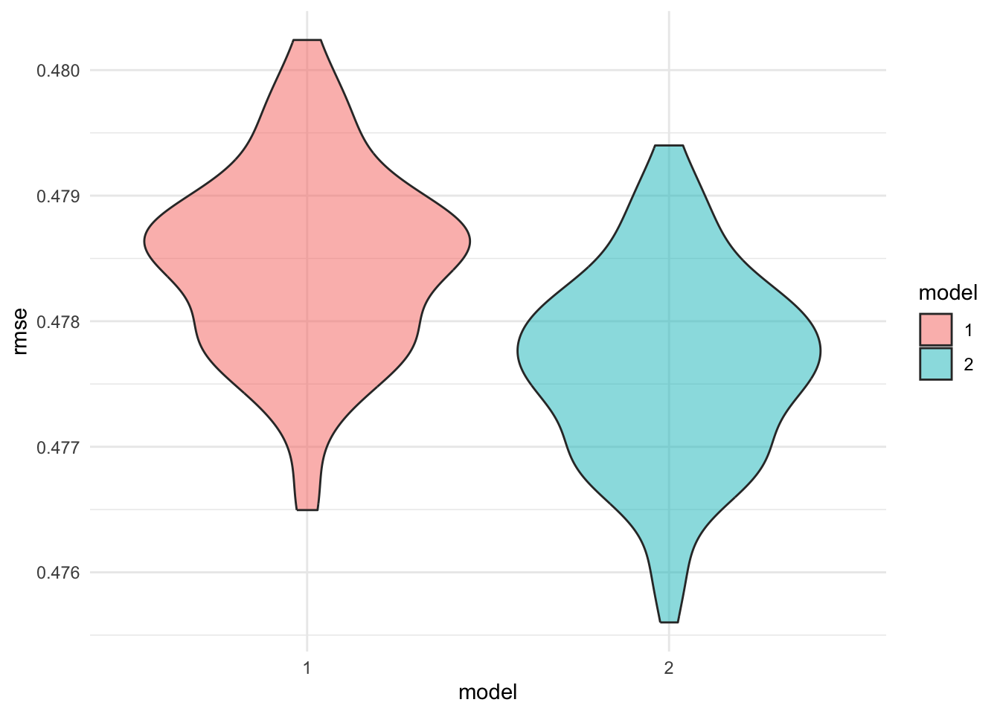
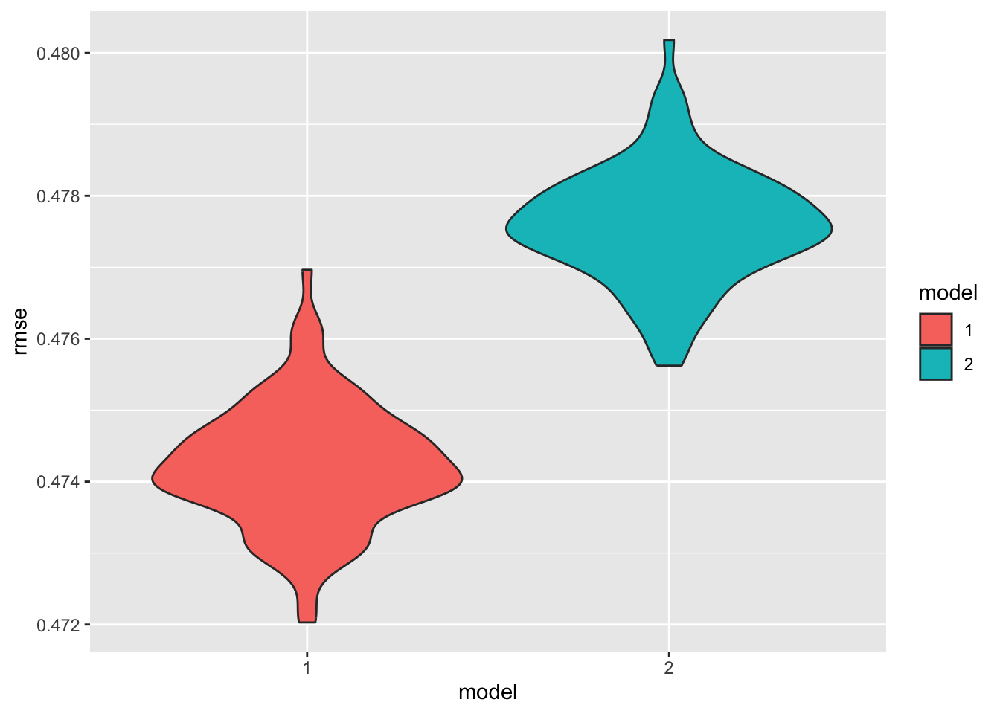

title: “Regression Models: Explaining Rodent Activity” output: html_document —
author: “Yujing Fu, Hanrui Li” date: “2024-11-30” output: html_document —
library(tidyverse)
library(dplyr)
library(ggplot2)
library(lubridate)
library(tidyr)
library(rvest)
library(janitor)
library(modelr)# data import
rat_df = read.csv("data/rat_2020_2024.csv")
food_scrap_df =
read.csv("data/food_scrap_drop_off.csv")
zhvi_df = read.csv("data/ny_zhvi_df_2020_2024.csv")
zori_df = read.csv("data/ny_zori_df_2020_2024.csv")# clean rat data
rat_tidydf = rat_df |>
mutate(inspection_date = substring(inspection_date, 1, 10)) |>
mutate(date = as.Date(inspection_date, format = "%m/%d/%Y")) |>
mutate(year = as.numeric(format(date, "%Y"))) |>
mutate(month = as.numeric(format(date, "%m"))) |>
mutate(day = as.numeric(format(date, "%d"))) |>
select(inspection_type, result, date, year, month, day, street_name, zip_code, borough,latitude, longitude, location)# clean zhvi and zori data
zhvi_tidydf =
zhvi_df |>
janitor::clean_names() |>
mutate(region_name=as.numeric(region_name)) |> # Convert the data type to numeric
rename(zip_code = region_name, county = county_name) |> # Rename 'region_name' to 'zip_code'
mutate(county = gsub(" County", "", county)) |>
pivot_longer(
cols = starts_with("x20"),
names_to = "date",
values_to = "house_price") |>
mutate(date = as.Date(gsub("^x", "", date), format = "%Y_%m_%d")) |> # Remove 'x' from date and convert to Date format
mutate(year = as.numeric(format(date, "%Y"))) |> # Extract the year from the date
mutate(month = as.numeric(format(date, "%m"))) |> # Extract the month from the date
select(zip_code, county, date, year, month, house_price) |> # Select relevant columns
drop_na() # Remove rows with missing values for data quality
# Clean and transform ZORI (rental price) dataset
zori_tidydf =
zori_df |>
janitor::clean_names() |> # Standardize column names to clearer version
rename(zip_code = region_name, county = county_name) |> # Rename 'region_name' to 'zip_code'
mutate(county = gsub(" County", "", county)) |>
pivot_longer(
cols = starts_with("x20"),
names_to = "date",
values_to = "rental_price") |>
mutate(date = as.Date(gsub("^x", "", date), format = "%Y_%m_%d")) |> # Remove 'x' from date and convert to Date format
mutate(year = as.numeric(format(date, "%Y"))) |>
mutate(month = as.numeric(format(date, "%m"))) |>
select(zip_code, county, date, year, month, rental_price) |> # Select necessary columns
drop_na() # Remove rows with missing values# zip code df
url = "https://p8105.com/data/zip_codes.html"
zip_code_html = read_html(url)
zip_code_df =
zip_code_html |>
html_table() |>
as.data.frame() |>
janitor::clean_names() |>
mutate(borough = case_when(
county == "Bronx" ~ "Bronx",
county == "Kings" ~ "Brooklyn",
county == "New York" ~ "Manhattan",
county == "Queens" ~ "Queens",
county == "Richmond" ~ "Staten Island",
TRUE ~ "Other"
)) |>
select(zip_code, county, neighborhood, borough) |>
drop_na()# merge the zori & zhvi with zip code based on both the `zip_code` and `county`
zori_merged = left_join(zori_tidydf, zip_code_df, by = c("zip_code", "county")) |>
select(-date)
zhvi_merged = left_join(zhvi_tidydf, zip_code_df, by = c("zip_code", "county")) |>
select(-date)# merge the zillow information
zillow_merged = merge(zori_merged, zhvi_merged, by = c("zip_code", "county", "borough", "neighborhood", "year", "month")) |>
drop_na()# define the binary variable of rodent activity
rodent_reg =
rat_tidydf |>
mutate(rodent_bi = case_when(
result == "Rat Activity" ~ 1,
TRUE ~ 0
)) rodent_reg_merged =
left_join(zillow_merged, rodent_reg, by = c("zip_code", "borough", "year", "month"))rodent_bi = 1: Indicates “Rat Activity” was found during the inspection. This means that there was a confirmed presence of rodent activity at the inspected location.
rodent_bi = 0: Indicates “No Rat Activity” or any other result different from “Rat Activity”. This means there was no confirmed rodent activity at the inspected location.
#Regression model testing for confounding
model5 <- glm(rodent_bi ~ borough + rental_price, data = rodent_reg_merged)
# Creating Regression Model Table
model5 |>
broom::tidy() |>
select(term, estimate, p.value) |>
knitr::kable(digits = 10)| term | estimate | p.value |
|---|---|---|
| (Intercept) | 0.4179050705 | 0.00e+00 |
| boroughBrooklyn | -0.0935738820 | 0.00e+00 |
| boroughManhattan | -0.0476417252 | 0.00e+00 |
| boroughQueens | -0.1672550224 | 0.00e+00 |
| boroughStaten Island | -0.3447959091 | 0.00e+00 |
| rental_price | 0.0000110014 | 6.13e-08 |
\[\text{rodent acticvity} = 0.4179+(−0.0936)\times \text{Brooklyn}+(−0.0476)\times \text{Manhattan}+(−0.1673)\times \text{Queens}+(−0.3448)\times \text{Staten Island}+(0.000011)\times \text{rental price}\]
Where:
Intercept (\(\beta_0\)): 0.4179
The intercept represents the baseline probability of rodent activity in the Bronx when rental price is 0.
Coefficient for borough (\(\beta_{1,2,3,4}\)):
These coefficients represent the difference in probability of rodent activity between each borough and the Bronx (the reference borough).
Coefficient for borough (\(\beta_{5}\)): 0.000011
Rental price has a small positive effect on the probability of rodent activity.
Statistical Significance:
All predictors, including boroughs and rental price, are statistically significant (p < 0.001). This suggests that both borough and rental price significantly contribute to the prediction of rodent activity.
Summary:
Borough remains a strong predictor of rodent activity. Rental price is also a significant predictor.
#Regression model testing for confounding
model7 <- glm(rodent_bi ~ borough + house_price, data = rodent_reg_merged)
# Creating Regression Model Table
model7 |>
broom::tidy() |>
select(term, estimate, p.value) |>
knitr::kable(digits = 10)| term | estimate | p.value |
|---|---|---|
| (Intercept) | 0.4625980364 | 0.0000000 |
| boroughBrooklyn | -0.0589711698 | 0.0000000 |
| boroughManhattan | 0.0027349667 | 0.5799593 |
| boroughQueens | -0.1479732293 | 0.0000000 |
| boroughStaten Island | -0.3335062504 | 0.0000000 |
| house_price | -0.0000000497 | 0.0000000 |
\[\text{rodent activity} = 0.4626+(−0.0590)\times \text{Brooklyn}+(0.0027)\times \text{Manhattan}+(−0.1480)\times \text{Queens}+(−0.3335)\times \text{Staten Island}+(−0.000000497)\times \text{house price}\]
Where:
Intercept (\(\beta_0\)): 0.4626
The intercept represents the baseline probability of rodent activity in the Bronx (the reference category) when the house price is 0.
Coefficient for borough (\(\beta_{1,2,3,4}\)):
These coefficients represent the difference in the probability of rodent activity for each borough compared to the Bronx, controlling for house price.
Coefficient for borough (\(\beta_{5}\)): -0.000000497
House price has a very small negative effect on the probability of rodent activity.
Statistical Significance:
Manhattan is not statistically significant (p = 0.58), but all other borough coefficients are statistically significant (p < 0.001). The coefficient for house price is statistically significant, but the effect size is negligible.
Summary:
Borough remains a significant predictor of rodent activity. House price also has a statistically significant effect.
#Regression model testing for confounding
model8 <- glm(rodent_bi ~ borough + rental_price + house_price, data = rodent_reg_merged)
# Creating Regression Model Table
model8 |>
broom::tidy() |>
select(term, estimate, p.value) |>
knitr::kable(digits = 10)| term | estimate | p.value |
|---|---|---|
| (Intercept) | 0.3864155486 | 0.000000000 |
| boroughBrooklyn | -0.0713618975 | 0.000000000 |
| boroughManhattan | -0.0136966681 | 0.006363476 |
| boroughQueens | -0.1510194546 | 0.000000000 |
| boroughStaten Island | -0.3252400123 | 0.000000000 |
| rental_price | 0.0000462109 | 0.000000000 |
| house_price | -0.0000000978 | 0.000000000 |
\[\text{rodent activity} = 0.3864+(−0.0714)\times \text{Brooklyn}+(−0.0137)\times \text{Manhattan}+(−0.1510)\times \text{Queens}+(−0.3252)\times \text{Staten Island}+(0.0000462)\times \text{rental price}+(−0.000000978)\times \text{house price}\]
Where:
Intercept (\(\beta_0\)): 0.3864
The intercept represents the baseline probability of rodent activity in the Bronx when rental_price=0 and house_price=0.
Coefficient for borough (\(\beta_{1,2,3,4}\)):
These coefficients represent the difference in the probability of rodent activity for each borough compared to the Bronx, controlling for rental price and house price.
Coefficient for borough (\(\beta_{5}\)): 0.0000462
Rental price has a very small positive effect on the probability of rodent activity.
Coefficient for borough (\(\beta_{6}\)): -0.000000978
House price has a very small negative effect on the probability of rodent activity.
Statistical Significance:
All borough coefficients are statistically significant (p<0.01). Rental price and house price are statistically significant (p=0), but their effects are very small.
Summary:
Borough is a strong predictor of rodent activity. Rental price and house price are also statistically significant.
In conclusion, Borough remains the dominant predictor of rodent activity in the model. Although rental price and house price are statistically significant, their effects are too small to have practical relevance. Here, we need to compare the models to decide which predictors to consider.
cv1_df =
crossv_mc(rodent_reg_merged, 100)
cv1_df |>
mutate(
mod_1 = map(train, \(df) glm(rodent_bi ~ borough, data = rodent_reg_merged)),
mod_2 = map(train, \(df) glm(rodent_bi ~ borough + rental_price + house_price,
data = rodent_reg_merged))) |>
mutate(
rmse_1 = map2_dbl(mod_1, test, \(mod, df) rmse(model = mod, data = df)),
rmse_2 = map2_dbl(mod_2, test, \(mod, df) rmse(model = mod, data = df))) |>
select(starts_with("rmse")) |>
pivot_longer(
everything(),
names_to = "model",
values_to = "rmse",
names_prefix = "rmse_") |>
ggplot(aes(x = model, y = rmse, group = model, fill = model)) +
geom_violin(alpha = 0.5) +
theme_minimal()
The model excluding rental price and house value has a much higher root mean squared errors (RMSE) value than the model including rental price and house value. This means that the model including rental price and house value better fits our data.
#Regression model testing for confounding
model9 = glm(formula = rodent_bi ~ borough + rental_price + house_price +
borough*rental_price*house_price, data = rodent_reg_merged)
# Creating Regression Model Table
model9 |>
broom::tidy() |>
select(term, estimate, p.value) |>
knitr::kable(digits = 10)| term | estimate | p.value |
|---|---|---|
| (Intercept) | 0.6955330911 | 0.000000000 |
| boroughBrooklyn | -1.4197603991 | 0.000000000 |
| boroughManhattan | 0.0063149166 | 0.934697252 |
| boroughQueens | -0.2337439883 | 0.062390602 |
| boroughStaten Island | -2.9077449660 | 0.044424454 |
| rental_price | -0.0000035076 | 0.917536797 |
| house_price | -0.0000004249 | 0.008070334 |
| boroughBrooklyn:rental_price | 0.0003818638 | 0.000000000 |
| boroughManhattan:rental_price | -0.0000618627 | 0.071637366 |
| boroughQueens:rental_price | -0.0000368845 | 0.488734039 |
| boroughStaten Island:rental_price | 0.0013601407 | 0.065178956 |
| boroughBrooklyn:house_price | 0.0000011302 | 0.000000000 |
| boroughManhattan:house_price | 0.0000002448 | 0.128552047 |
| boroughQueens:house_price | -0.0000000407 | 0.838245302 |
| boroughStaten Island:house_price | 0.0000034063 | 0.123142293 |
| rental_price:house_price | -0.0000000001 | 0.332989979 |
| boroughBrooklyn:rental_price:house_price | -0.0000000002 | 0.015165596 |
| boroughManhattan:rental_price:house_price | 0.0000000001 | 0.157520150 |
| boroughQueens:rental_price:house_price | 0.0000000002 | 0.013981259 |
| boroughStaten Island:rental_price:house_price | -0.0000000017 | 0.116823631 |
There are significant interactions between borough and rental price as well as borough and house price, particularly in Brooklyn and Queens. This indicates that the relationship between rental price, house price, and rodent activity varies across different boroughs.
This model is considerably more complex, with numerous interaction terms. The results suggest that while borough remains a key factor in predicting rodent activity, the influence of rental and house prices varies by borough. However, many of the interaction effects are not statistically significant, implying that the added complexity may not be providing substantial predictive improvement.
Therefore, we need to check further.
cv2_df =
crossv_mc(rodent_reg_merged, 100)
cv2_df |>
mutate(
mod_1 = map(train, \(df) glm(formula = rodent_bi ~ borough + rental_price + house_price
+ borough*rental_price*house_price, data = rodent_reg_merged)),
mod_2 = map(train, \(df) glm(formula = rodent_bi ~ borough + rental_price + house_price,
data = rodent_reg_merged))) |>
mutate(
rmse_1 = map2_dbl(mod_1, test, \(mod, df) rmse(model = mod, data = df)),
rmse_2 = map2_dbl(mod_2, test, \(mod, df) rmse(model = mod, data = df))) |>
select(starts_with("rmse")) |>
pivot_longer(
everything(),
names_to = "model",
values_to = "rmse",
names_prefix = "rmse_") |>
ggplot(aes(x = model, y = rmse, group = model, fill = model)) +
geom_violin()
The model with an interaction term between borough, rental price, and home value has a lower RMSE value than the model without an interaction term. Ultimately, the model with interaction terms appears to be the best model.